| On Scholarly Publishing Bill Cope Bolashak Seminar, 15 April 2025 |
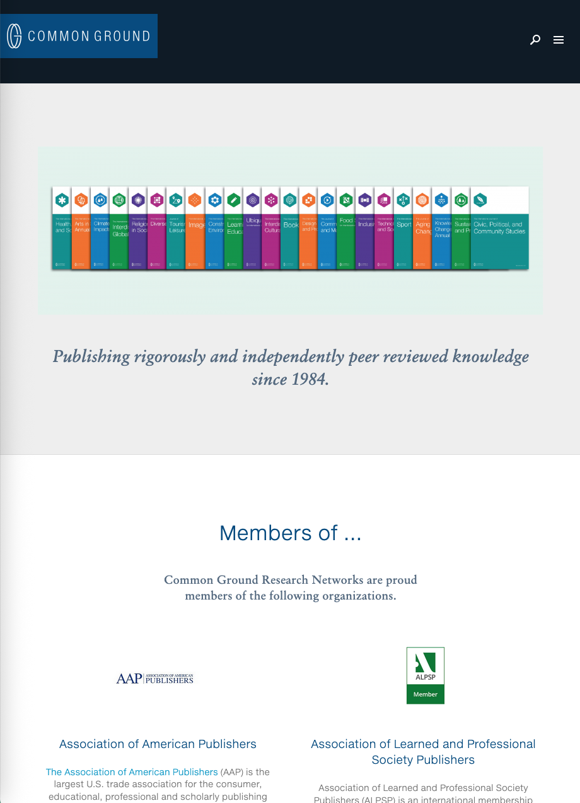
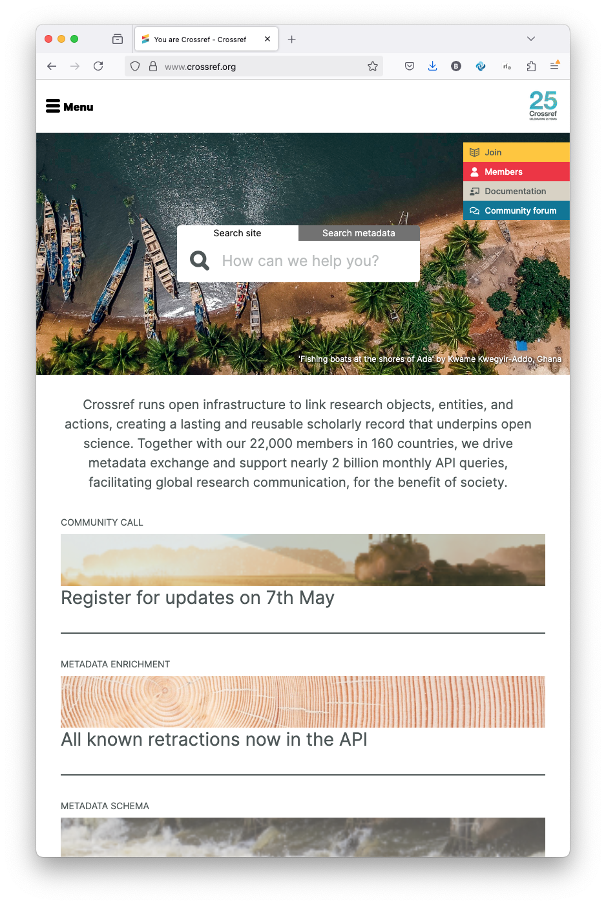
| Repositories “Grey” Reports Journals Books |
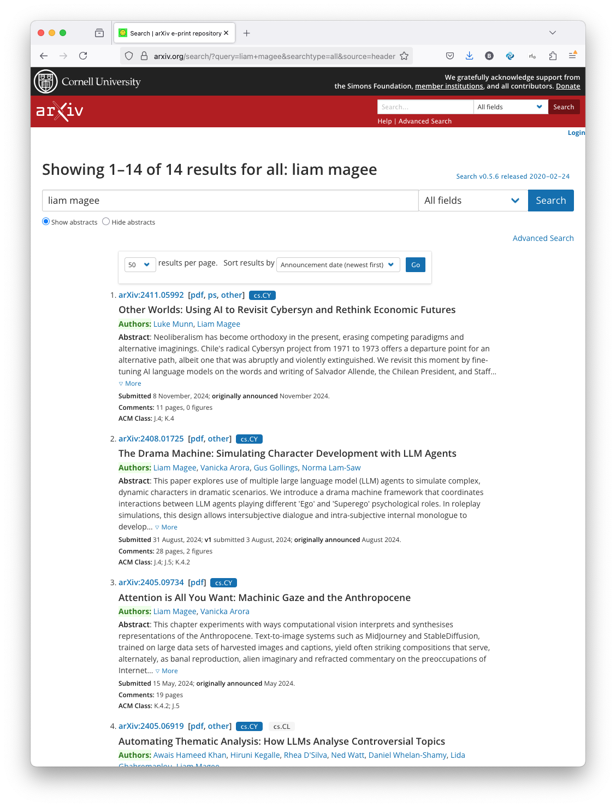
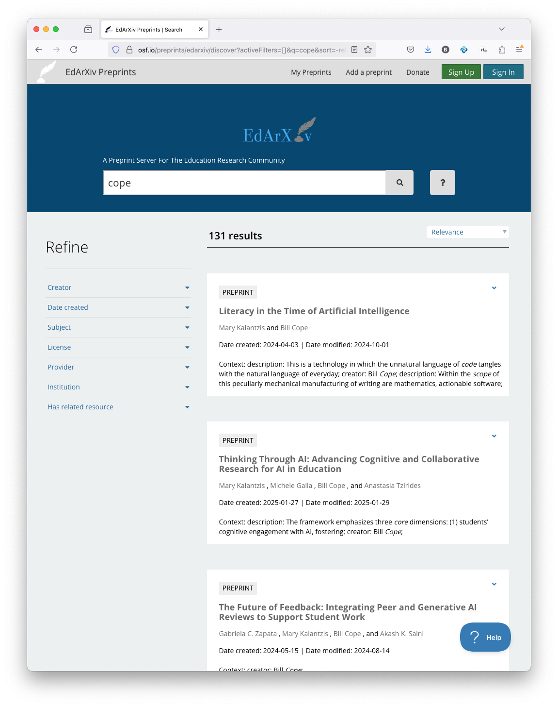
| Subscription-based Open Access Hybrid But slow, expensive, network effects and there’s always reviewer 2… |
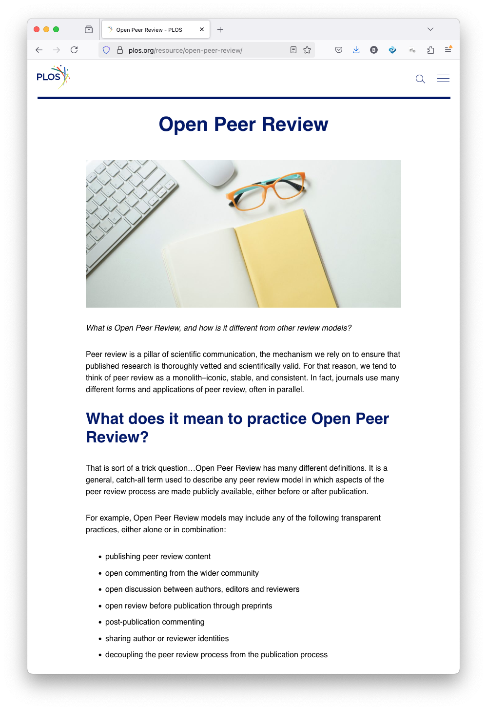
Peer Review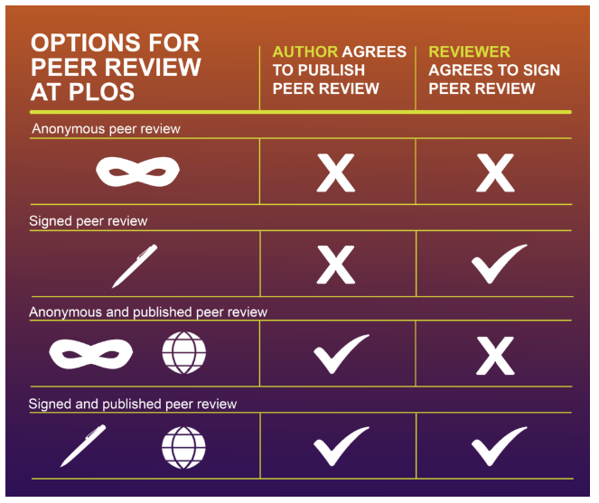 Two-way anonymous One-way anonymous Open Post-publication |
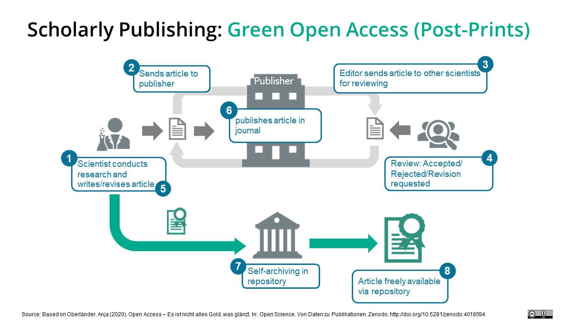
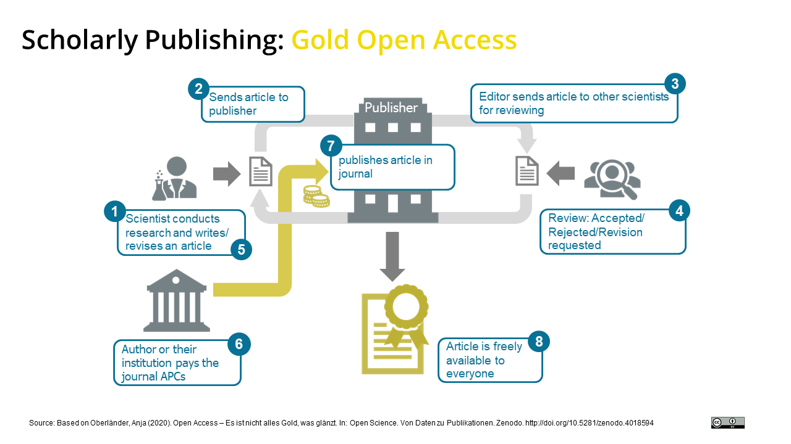
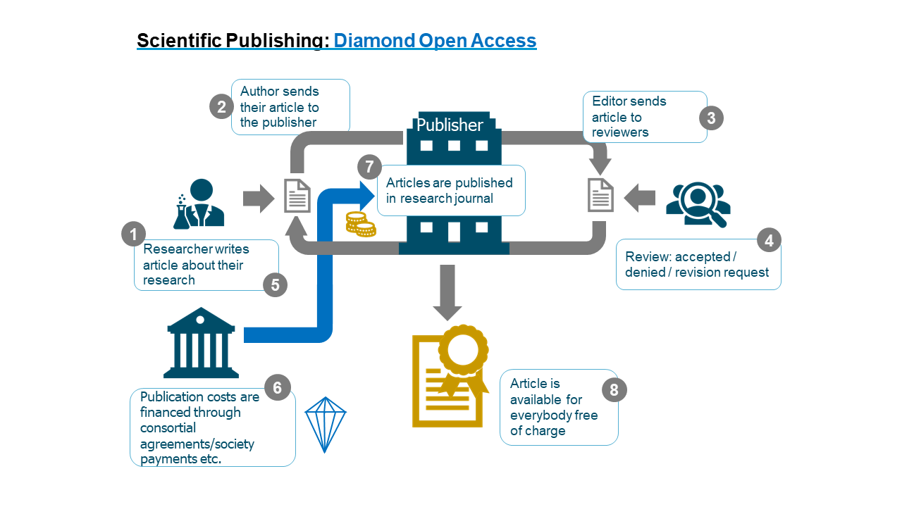
| © Assignment © License CC BY: Creative Commons Attribution License. CC BY-NC: Creative Commons Attribution-Non-Commercial License. CC BY-NC-ND: Creative Commons Attribution Non-commercial No-Derivatives License. CC BY-ND: Creative Commons Attribution No-Derivatives License |
| Multiply Authored, Anthologies Proposals: overview, outline of chapters, competing volumes, bionotes Advantages: commitment to publish Disadvantages: slow, less visibility in citation systems |
Journal of Visualized Experiments |
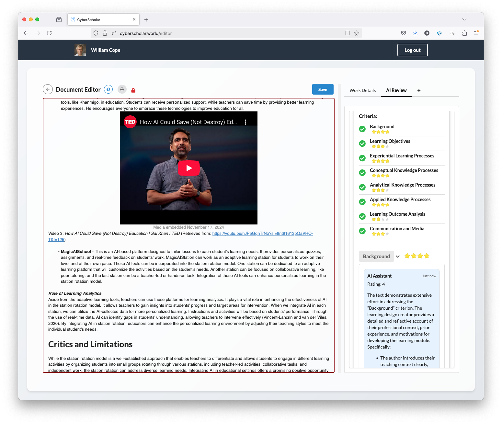
| AI Generated Content AI Reviews |
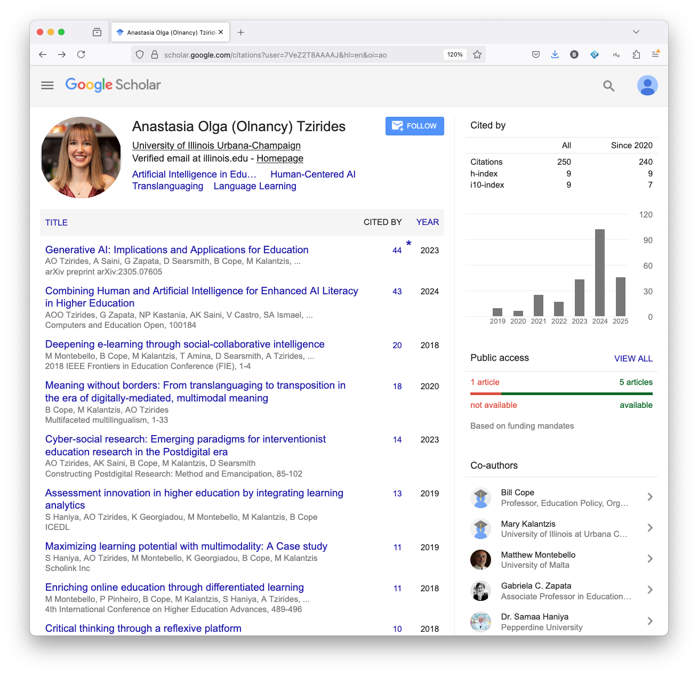
Bibliometrics| Follow the gossip! Beware of network effects! H-index: A researcher has an index h if h of their publications have each been cited at least h times, and the other publications have no more than h citations each. i10-index: total count of publications meeting the 10-citation threshold. 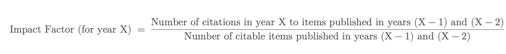 Journal Impact Factor |
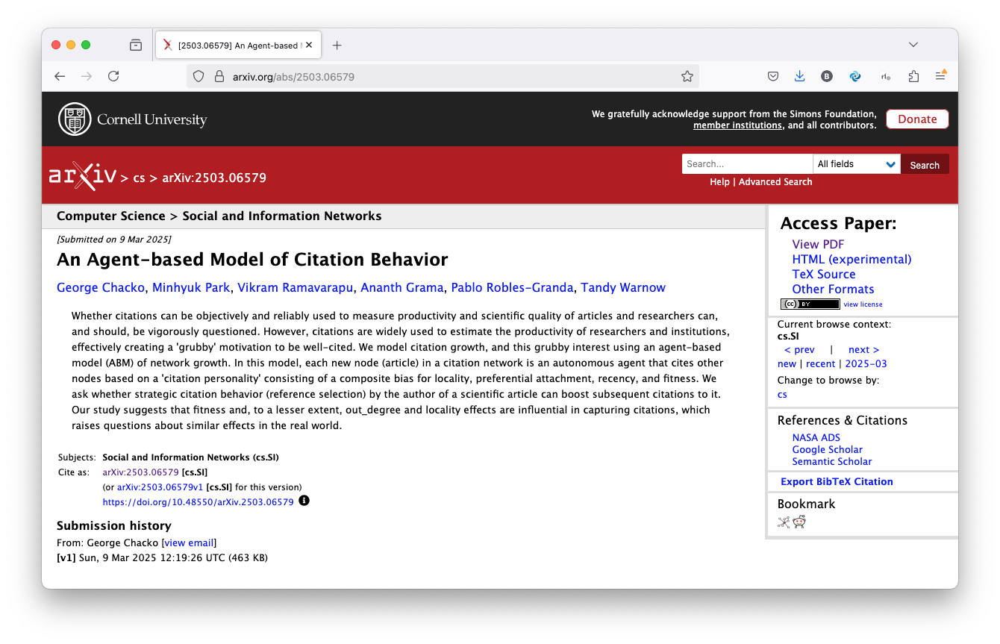